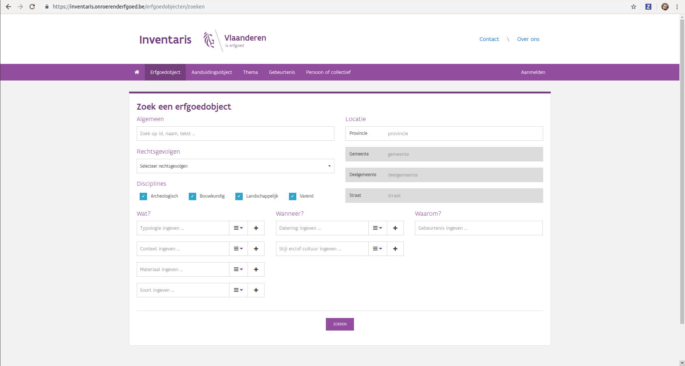

Sinds 13 mei staat er een gloednieuwe inventaris op https://inventaris.onroerenderfgoed.be. Zoals altijd is het even aanpassen. En dat is misschien het duidelijkste in de zoekmogelijkheden. Sommige mogelijkheden zijn blijven bestaan, andere zijn lichtjes of sterk gewijzigd. Omdat het even wennen is, lijsten we op onze IT blog de voornaamste mogelijkheden qua zoeken op. Vandaag geven we een aantal algemene principes mee, die we later verder uitdiepen.
Warning
Omdat de nieuwe inventaris nog vers is, kunnen er nog lichte verschuivingen optreden, dus mogelijk is nog niet alles definitief.
De inventaris bevat op dit moment 5 grote datasets: erfgoedobjecten, aanduidingsobjecten, personen, thema’s en gebeurtenissen. Veel zoekmogelijkheden en principes worden gedeeld tussen de verschillende datasets. We hebben geprobeerd bepaald regels en patronen voorspelbaar te maken en maximaal te hergebruiken. Zo kun je er van uit gaan dat het zoeken naar erfgoedobjecten of aanduidingsobjecten in een bepaalde gemeente hetzelfde verloopt. Of dat het zoeken met thesaurustermen overal op dezelfde manier werkt.
Bij het zoeken maken we een onderscheid tussen een zoekservice en de UI (User Interface) die kan gebruikt worden. Zoeken is een zeer complexe materie waarin we soms willen kunnen gebruik maken van meerdere parameters, booleaanse combinaties (dit EN dat, dit OF dat, NIET dit), zoeken met een id of een string, wildcards, … En dit moet allemaal simpel en eenduidig zijn. In de praktijk merken we dat de perfecte UI voor zoekacties niet bestaat en altijd afhankelijk is van de gebruiker die aan het zoeken is. Iets wat heel vaak moeilijk te voorspellen valt. Daarom hebben de toepassingen van het agentschap dikwijls zoekservices die meer aankunnen dan wat de UI ontsluit. De standaard UI bouwen we voor een doorsnee gebruiker, de service zelf richt zich meer op ontwikkelaars en ervaren gebruikers die wat vlotter met IT tools overweg kunnen.
Onder de UI verstaan we de verschillende zoekformulieren, zoals https://inventaris.onroerenderfgoed.be/erfgoedobjecten/zoeken. Hier kun je op een relatief simpele en sterk begeleide manier je zoekparameters ingeven. We geven je voorbeeldlijstjes met gemeente- en straatnamen zodat je die niet van buiten hoeft te kennen. Het nadeel van een UI is dat deze duur is om te ontwikkelen. Het is dan ook verre van evident om complexe zoekopdrachten in zo’n formulier te verwerken.
Via de User Interface kan je vlot simpele zoekopdrachten ingeven
De service is een door machines bevraagbare dienst waaraan we vragen kunnen stellen. De UI doet eigenlijk niet meer dan een gebruiker helpen bij het opstellen van queries voor deze service. Onze services zijn zogenaamde REST services die JSON gebruiken om informatie door te sturen. Zonder in veel details te gaan willen we meegeven dat je het resultaat van een zoekactie in de nieuwe inventaris zowel kan doorbladeren als HTML, en kan downloaden als JSON of CSV gegevens. Dit kan je heel eenvoudig doen door een zoekactie uit te voeren via het formulier en de daaruit verkregen URL te bevragen met een andere HTTP Accept header, application/json.
Dit kan je doen met een command-line tool zoals curl, maar ook met een zogenaamde REST client of met je favoriete programmeertaal.
$ curl -X GET -H "Accept: application/json" https://inventaris.onroerenderfgoed.be/erfgoedobjecten?gemeente=278
De zoekformulieren van de inventaris ondersteunen zowel een vorm van full-text zoeken (soms ook kortweg zoeken genoemd) als een vorm van filteren. Dat klinkt misschien heel gelijkaardig, maar eigenlijk dienen beiden een heel verschillend doel. Beide technieken dienen om gericht informatie te vinden in een grote set van gegevens. Ze zorgen er dus voor dat we niet relevante gegevens niet hoeven te zien. In beide gevallen krijg je bij ons nog steeds pagina’s met gegevens te zien. Dus waar zit dan het verschil?
Filteren is bij uitstek een zwart/wit of ja/nee verhaal. Een object beantwoordt aan een filtercriterium of niet. Je wenst bv. al het erfgoed in een bepaalde gemeente of straat te kennen. Of alle kerken. Of alle kerken in een bepaalde gemeente. Hierbij ben je meestal niet op zoek naar 1 enkel object. Soms wil je enkel weten hoeveel woningen er in een gemeente zijn en wil je ze zelfs niet individueel zien.
Full-text zoeken is geen zwart/wit verhaal, maar grijs. De zoekmachine probeert het meest relevante resultaat voor je vraag te geven. Je zoek bv. naar efgoedobjecten waarin Gravensteen voorkomt of Sint-Veerle. Hier ben je meestal maar op zoek naar een kleine aantal objecten of wil je iets meer weten over Sint-Veerle. Kenmerkend hierbij is dat we de zoekresultaten zo proberen te ordenen dat het meest relevante object bovenaan de lijst staat. Hoe verder je door de lijst bladert, hoe minder kans dat een resultaat echt relevant is voor je. Dit is dezelfde manier waarop de grote zoekmachines op het internet zoals Google werken.
Natuurlijk kun je beide technieken ook combineren. Stel dat je full-text naar het Gravensteen zoekt, dan zie je dit: https://inventaris.onroerenderfgoed.be/erfgoedobjecten?tekst=gravensteen . Tien objecten waarvan het eerste het Gravensteen in Gent is. Het laatste object is echter de archeologische zone van Aalst, omdat in de beschrijving daarvan ook gravensteen voorkomt. Stel dat we enkel interesse hebben in het Gentse gravensteen, dan kunnen we onze zoekresultaten filteren op de gemeente Gent met: https://inventaris.onroerenderfgoed.be/erfgoedobjecten?tekst=gravensteen&gemeente=278 . Ook deze keer staat het Gravensteen in Gent bovenaan de lijst, maar er zijn slechts 7 resultaten aangezien fiches die niet in de gemeente Gent liggen uit de lijst geweerd zijn.
Bedenk dat zolang je een full-text zoekactie doet door de parameter Algemeen in te vullen in een zoekformulier, de toepassing zal sorteren op relevantie. Als je niet full-text zoekt, wordt er op locatie gesorteerd. Indien je full-text zoekt kan je de sorteervolgorde nog altijd aanpassen. Dit is echter maar zelden aangewezen. Je zou bv. alle fiches van erfgoedobjecten in Gent kunnen zoeken waarbij het Gravensteen in de fiche voorkomt en dit op locatie laten sorteren omdat je niet geïnteresseerd bent in de meest Gravenstenige fiche, maar gewoon alles waarin melding van het Gravensteen wordt gemaakt.
Hopelijk heb je nu al iets meer inzicht in de werking van de inventaris zoekmachines en snap je wanneer je best kunt zoeken of filteren. Of wanneer je de combinatie kunt toepassen. In een volgende blog leggen we uit hoe je :ref:`gerichter kunt full-text zoeken<inventaris-full-text-zoeken>`_ en hoe we nu eigenlijk bepalen wat de meest relevante fiche is voor een bepaalde vraag. Op basis van wat beslissen we nu wat het meest Gravenstenige erfgoedobject is?